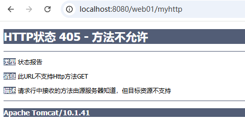

模板方法：template-pattern
Servlet 规范中，专门针对 HTTP 协议提供了一个 Servlet，名字叫做：HttpServlet。
HttpServlet 的全限定类名是：jakarta.servlet.http.HttpServlet。
HttpServlet 源码大致如下：
// ......
public abstract class HttpServlet extends GenericServlet {
// ......
private static final String METHOD_DELETE = "DELETE";
private static final String METHOD_HEAD = "HEAD";
private static final String METHOD_GET = "GET";
private static final String METHOD_OPTIONS = "OPTIONS";
private static final String METHOD_POST = "POST";
private static final String METHOD_PUT = "PUT";
private static final String METHOD_TRACE = "TRACE";
// ......
@Override
public void init(ServletConfig config) throws ServletException {
super.init(config);
cachedUseLegacyDoHead = Boolean.parseBoolean(config.getInitParameter(LEGACY_DO_HEAD));
}
// ......
// 钩子方法。
protected void doGet(HttpServletRequest req, HttpServletResponse resp) throws ServletException, IOException {
String msg = lStrings.getString("http.method_get_not_supported");
sendMethodNotAllowed(req, resp, msg);
}
// 钩子方法。
protected void doPost(HttpServletRequest req, HttpServletResponse resp) throws ServletException, IOException {
String msg = lStrings.getString("http.method_post_not_supported");
sendMethodNotAllowed(req, resp, msg);
}
// ......
// 模板方法
protected void service(HttpServletRequest req, HttpServletResponse resp) throws ServletException, IOException {
String method = req.getMethod();
if (method.equals(METHOD_GET)) {
long lastModified = getLastModified(req);
if (lastModified == -1) {
doGet(req, resp);
} else {
long ifModifiedSince;
try {
ifModifiedSince = req.getDateHeader(HEADER_IFMODSINCE);
} catch (IllegalArgumentException iae) {
// Invalid date header - proceed as if none was set
ifModifiedSince = -1;
}
if (ifModifiedSince < (lastModified / 1000 * 1000)) {
// If the servlet mod time is later, call doGet()
// Round down to the nearest second for a proper compare
// A ifModifiedSince of -1 will always be less
maybeSetLastModified(resp, lastModified);
doGet(req, resp);
} else {
resp.setStatus(HttpServletResponse.SC_NOT_MODIFIED);
}
}
} else if (method.equals(METHOD_HEAD)) {
long lastModified = getLastModified(req);
maybeSetLastModified(resp, lastModified);
doHead(req, resp);
} else if (method.equals(METHOD_POST)) {
doPost(req, resp);
} else if (method.equals(METHOD_PUT)) {
doPut(req, resp);
} else if (method.equals(METHOD_DELETE)) {
doDelete(req, resp);
} else if (method.equals(METHOD_OPTIONS)) {
doOptions(req, resp);
} else if (method.equals(METHOD_TRACE)) {
doTrace(req, resp);
} else {
String errMsg = lStrings.getString("http.method_not_implemented");
Object[] errArgs = new Object[1];
errArgs[0] = method;
errMsg = MessageFormat.format(errMsg, errArgs);
resp.sendError(HttpServletResponse.SC_NOT_IMPLEMENTED, errMsg);
}
}
@Override
public void service(ServletRequest req, ServletResponse res) throws ServletException, IOException {s
HttpServletRequest request;
HttpServletResponse response;
try {
request = (HttpServletRequest) req;
response = (HttpServletResponse) res;
} catch (ClassCastException e) {
throw new ServletException(lStrings.getString("http.non_http"));
}
service(request, response);
}
// ......
}
通过以上 HttpServlet的源码可以看到，HttpServlet继承了 GenericServlet。因此 HttpServlet也实现了 Servlet接口。另外还可以看到 HttpServlet也是一个抽象类。
HttpServlet 核心源码大概 90 来行，大家可以认真读一下。假设你编写一个类 MyServlet直接继承了 HttpServlet，然后重写了 doGet方法。 当用户发送第一次请求的时候（发送 get 请求），底层的执行过程是怎样的呢？
@WebServlet("/myservlet") // servlet3.0版本中引入的注解。代替<url-pattern>。
public class MyServlet extends HttpServlet{
public void doGet(HttpServletRequest req, HttpServletResponse resp) throws ServletException, IOException {
System.out.println("MyServlet's doGet execute!");
}
}
我们来尝试描述下：
/web01/myservlet请求路径MyServlet类的无参数构造方法完成实例化操作。MyServlet对象的 init(ServletConfig)方法。MyServlet对象的 service方法，由于在 MyServlet类中没有重写 service方法，因此会调用 HttpServlet的 service方法。HttpServlet类中的 service方法有两个，如下：service(ServletRequest req, ServletResponse res)方法的源码可以看出，将 ServletRequest 转换成了 HttpServletRequest，将 ServletResponse 转换成了 HttpServletResponse，然后调用了 service(HttpServletRequest req, HttpServletResponse resp)。service(HttpServletRequest req, HttpServletResponse resp)方法执行的过程中：doGet方法，由于 MyServlet 类正好重写了 doGet 方法，因此 MyServlet 对象的 doGet 方法被调用。该方法执行过程中处理当前的用户请求。HttpServlet 类中的 service(HttpServletRequest req, HttpServletResponse resp)方法是一个模板方法，定义了核心算法骨架，具体的步骤延迟到子类 MyServlet 中实现的。因此 HttpServlet 是一个非常典型的模板方法设计模式。
根据 HttpServlet 源码可以看出，当 HttpServlet 类中的任何一个 doXxx 方法执行时，都会发生 405 错误：
protected void doGet(HttpServletRequest req, HttpServletResponse resp) throws ServletException, IOException {
String msg = lStrings.getString("http.method_get_not_supported");
sendMethodNotAllowed(req, resp, msg);
}
protected void doPost(HttpServletRequest req, HttpServletResponse resp) throws ServletException, IOException {
String msg = lStrings.getString("http.method_post_not_supported");
sendMethodNotAllowed(req, resp, msg);
}
什么情况下会发生 405 错误呢？当用户发送 get 请求，Servlet 类继承 HttpServlet 之后重写的不是 doGet 方法，则 HttpServlet 中的 doGet 方法会执行，此时就会发生 405。
怎么避免 405？前端发送 get 请求，重写 doGet 方法。前端发送 post 请求，重写 doPost 方法。则不会出现 405 错误。
编写代码测试一下 405 错误，前端发送 get 请求，后端重写 doPost 方法：
package com.jkweilai.servlet;
import jakarta.servlet.ServletException;
import jakarta.servlet.annotation.WebServlet;
import jakarta.servlet.http.HttpServlet;
import jakarta.servlet.http.HttpServletRequest;
import jakarta.servlet.http.HttpServletResponse;
import java.io.IOException;
@WebServlet("/myhttp")
public class MyHttpServlet extends HttpServlet {
@Override
protected void doPost(HttpServletRequest request, HttpServletResponse response) throws ServletException, IOException {
}
}
启动服务器，打开浏览器，在地址栏直接输入 URL，这种方式就是 get 请求：http://localhost:8080/web01/myhttp

因此，要避免 405 错误，前后端处理方式要一致。
最终最佳实践：